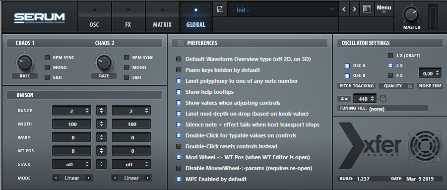
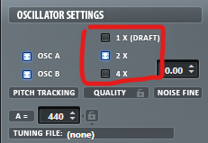
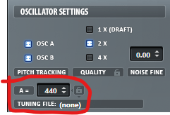

合成器Global讲解
本帖用于介绍合成器的Global面板。
首先看下 Serum 中的 Global 面板：

先看下这几个东西：quality（声音质量）、tune（音高）、bpm（速度）。
这三东西是绝大多数合成器的global中都有的。
Quality（声音质量）
通常声音质量越高要求的性能越大。
它在Serum中的这个位置：

Tune（音高）
标准音高是 A（小字一组a），即 440Hz。
它在Serum中的这个位置：

BPM（速度）
大部分合成器的BPM是与宿主的BPM绑定的。
应该都知道BPM是什么这里就不多说了。
之后会详细讲一下Serum的global面板，这里先讲到这（本来也没什么好说的）。
参考：